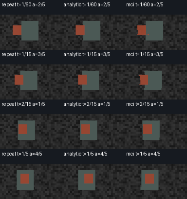
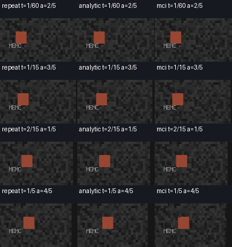

occlusion

Repeat / known analytic model / block MCI. One recorded shared reference is used across each clip and comparison mode. Sheets show spatial artifacts; browser playback does not validate panel cadence or perceived smoothness. Output PTS: 60/1 fps; linear arrays, masks and scores are in motion-validation.json. No named TV or vendor algorithm is calibrated.

